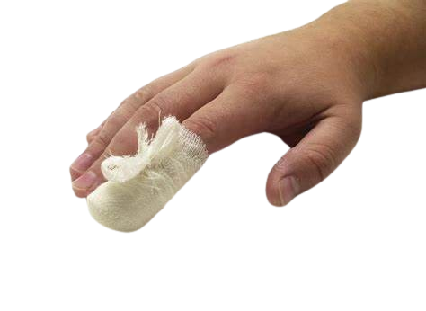

Lacerations, or cuts, happen when sharp objects tear the skin—common during earthquakes from debris like glass or metal. These can be shallow or deep.
First Aid Steps:
Stop the bleeding with firm pressure using a clean cloth. If it soaks through, add more layers instead of removing them. Once bleeding slows, rinse the wound with clean water—avoid harsh soaps.
Apply antibiotic ointment if available, then cover with a clean bandage. Keep it dry and change dressings regularly.
Watch for infection: redness, swelling, pus, or fever. Deep or dirty cuts need medical care. A tetanus shot may be necessary if not up to date.
 Back